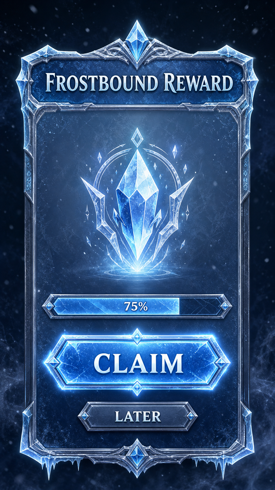

Concept reference

Reference evidence only. No pixels, masks, borders, shadows, or textures are copied into production sources.
- Ice-blue primary action and progress
- Primary action dominates by width and value
- Frost detail repeats without defining silhouettes
Deterministic reconstruction

Built from frostbound-reward@0.1.0, five approved component specs, and frost-crystal-materials@0.1.0.
- Primary/secondary width ratio: 1.44
- Action gap: 24 logical pixels
- Selected emblem changes silhouette, border, and value
- Progress frame/fill remain independent